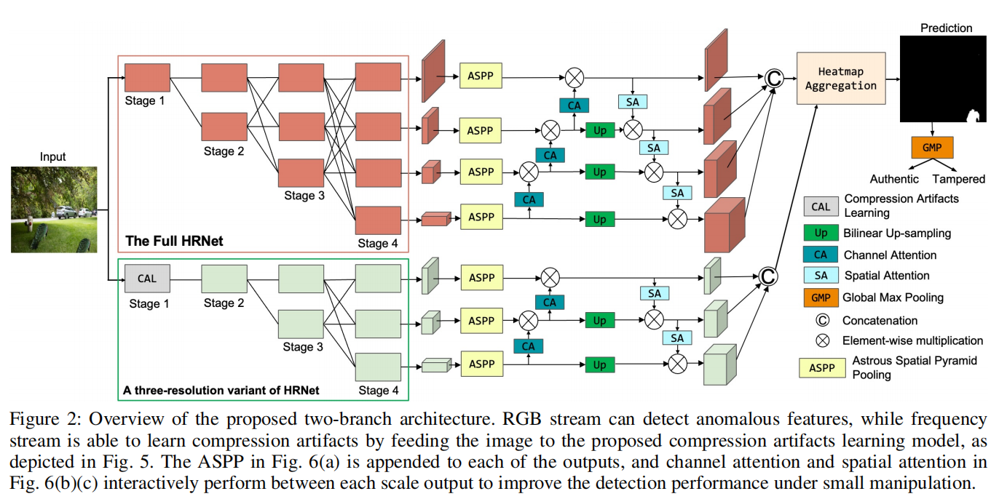

发表于TIFS2024，被篡改区域的边界是分离被篡改和未被篡改像素的关键位置，在这项工作中，我们提出了一种图像操作检测的边界感知方案，其中我们引入了充分利用篡改区域的边界信息，并从注意和特征学习两个角度实现了我们的方案。
现有问题：被篡改区域的边界是分离被篡改和未被篡改像素的关键位置。然而，如何利用这些边界信息来提高检测被篡改图像区域的性能仍有待探索。
解决方案：
在这项工作中，我们提出了一种图像操作检测的边界感知方案，其中我们引入了充分利用篡改区域的边界信息，并从注意和特征学习两个角度实现了我们的方案。首先，为了进一步增强操作定位，我们鼓励该模型关注一个被篡改区域周围的边界，其中经常存在非自然的混合。其次，受对比学习的启发，我们寻求学习一个特征空间，即篡改区域内的点远离篡改区域边界附近的非调和区域点，以获得更强大的特性来定位篡改区域。
具体情况
在注意方面，在我们的框架的解码层中，我们提出了一种新的基于交叉注意的边界感知模块，旨在提取图像中被篡改区域的边界，从而使模型进一步集中于被篡改区域的边界。特别是，边界感知注意模块利用跳连编码特征与前一层解码特征的相关性，提取被篡改区域的边界，进一步用于生成图像篡改定位的掩模。 在特征学习方面，我们提出的模型是基于一个典型的编解码器架构及其特征学习监督由一个新颖的对比目标函数[16]，[22]，[23]，表示为边界引导篡改对比损失，为了推动分开特征采样的篡改和非篡改区域，从而学习更多的区别特征表示。为此，我们采用边界引导的采样策略来收集负训练对，其中我们在被篡改区域的边界周围采样负样本，而不是整个非被篡改区域。该采样方案不仅鼓励模型关注存在非自然混合的边界区域，而且减轻了未篡改区域内巨大变化引起的干扰（见图1中的可视化特征）。
在特征学习方面，我们提出的模型是基于一个典型的编解码器架构及其特征学习监督由一个新颖的对比目标函数[16]，[22]，[23]，表示为边界引导篡改对比损失，为了推动分开特征采样的篡改和非篡改区域，从而学习更多的区别特征表示。为此，我们采用边界引导的采样策略来收集负训练对，其中我们在被篡改区域的边界周围采样负样本，而不是整个非被篡改区域。该采样方案不仅鼓励模型关注存在非自然混合的边界区域，而且减轻了未篡改区域内巨大变化引起的干扰（见图1中的可视化特征）。
发表于TIFS2023，随着互联网的蓬勃发展，在线社交网络（OSNs， online social networks）已成为图像共享和传输的主导渠道，但OSN传输下所有现有算法的性能都会严重下降，尤其是WeChat、QQ、Telegram和Dingding。为了减轻OSN的负面影响，在本工作中，我们提出了一种新的相机轨迹提取方法，该方法有望对各种OSN平台的传输具有鲁棒性。

发表于ACMMM2024,针对IML任务中公共训练数据集的稀缺，通过采用可调提示来利用预训练模型的丰富先验知识，即Prompt-IML框架,即插即用的特征对齐和融合模块。
现有问题：IML任务中公共训练数据集的稀缺直接阻碍了模型的性能。
解决方案：
提出了一个Prompt-IML框架，该框架通过采用可调提示来利用预训练模型的丰富先验知识。
具体情况
> 通过集成可调提示，从单个预先训练过的主干中提取和调整多视图特征，从而保持性能和鲁棒性 > 特征对齐和融合的FAF模块
> 特征对齐和融合的FAF模块

发表于CVPR2024,集成三个视图的UnionFormer框架,一个调节不同尺度上空间一致性的篡改特征提取网络BSFI-Net。
现有问题：以往的方法主要利用为高级视觉任务设计的深度卷积神经网络作为特征编码器或直接连接来自不同层的特征，不能充分表示篡改痕迹；目前的高级方法关注于像素或补丁级的一致性，而忽略了对象级的信息，在自然语言提示的引导下，自动生成的伪造部分更有可能表现出对象的不一致。解决方案：设计了专门用于提取取证工件的边界敏感特征交互网络（BSFI-Net, Boundary Sensitive Feature Interaction Network）设计了用于图像操作检测和定位的多视图表示的统一学习transformer框架
具体情况
> cnn-Transformer并发网络 BSFI-Net，该网络在保持边缘灵敏度的同时，促进了两个分支中不同尺度的特征之间的彻底交互。 > 采用对比监督来促进两个视图之间的协作
> 采用对比监督来促进两个视图之间的协作
 > 统一伪造判别表示，每个篡改判别查询都表示对应建议的三个视图中的篡改线索
> 统一伪造判别表示，每个篡改判别查询都表示对应建议的三个视图中的篡改线索

发表于AAAI2024，提出基于CatmullRom样条的回归网络，为了明确抑制假阳性样本和避免不确定性边界，综合再评分算法（CRA,Comprehensive Re-scoring Algorithm），综合评估每个区域的信任分数作为篡改区域，而垂直纹理交互感知（VTP, Vertical Texture-interactive Perception）控制生成更准确的区域边缘。
现有问题：假阳性（FPs）和不准确的边界。
解决方案：
基于CatmullRom样条的回归网络（CSR-Net, CatmullRom Splines-based Regression Network），首次尝试将回归方法引入像素级任务。为了明确抑制假阳性样本和避免不确定性边界，我们设计两个相互互补和强化的组件，即综合再评分算法（CRA,Comprehensive Re-scoring Algorithm），综合评估每个区域的信任分数作为篡改区域，而垂直纹理交互感知（VTP, Vertical Texture-interactive Perception）控制生成更准确的区域边缘。
具体情况
 在本文中，我们精心设计了一个定制的基于CatmullRom样条的回归网络（CSR-Net），并尝试将回归方法引入像素级图像篡改定位（本文中的IFL）。
在本文中，我们精心设计了一个定制的基于CatmullRom样条的回归网络（CSR-Net），并尝试将回归方法引入像素级图像篡改定位（本文中的IFL）。详细地说，与传统的边界盒检测方法相比，我们引入了CatmullRom定位技术，该技术对目标区域控制点的轮廓进行了建模，从而实现了更准确和有效的篡改区域定位。然后，为了抑制FPs（假阳性），设计了综合再评分算法（CRA），我们为每个区域实例重新分配分数，区域实例的综合得分由分类得分（CLS）和实例得分（INS）两部分组成。
此外，我们还提出了一个可学习的区域纹理提取模块垂直纹理交互感知（VTP）来进一步参考边缘。
 因此，CSRNet可以在不接近FPs的情况下感知所有被篡改的区域，并实现准确的定位。大量的实验表明，CSR-Net优于现有的最先进的方法，不仅在自然图像数据集上，而且在社交媒体数据集上。
因此，CSRNet可以在不接近FPs的情况下感知所有被篡改的区域，并实现准确的定位。大量的实验表明，CSR-Net优于现有的最先进的方法，不仅在自然图像数据集上，而且在社交媒体数据集上。发表于AAAI2024，一种两阶段判别噪声引导的方法，第一阶段训练一个噪声提取器，以明确地扩大真实区域和伪造区域之间的噪声分布差异，第二阶段将噪声不一致和RGB数据集成，以进行伪造检测和定位。
现有问题：- 随着篡改和后处理技术的发展，这两个区域在噪声域之间的差异变得不那么明显，甚至不那么隐藏。鉴于这些缺陷，我们建议明确地学习和利用噪声的不一致性可以进一步提高IFDL的性能。
解决方案：
通过关注噪声域内的操纵痕迹来检测和定位图像伪造，一种两阶段判别噪声引导的方法，第一阶段训练一个噪声提取器，以明确地扩大真实区域和伪造区域之间的噪声分布差异，第二阶段将噪声不一致和RGB数据集成，以进行伪造检测和定位。
具体情况
一阶段： 为了明确地分离出这两个区域（真实的和伪造的)的噪声分布，我们引入了JS散度来约束 $ G_d $ 。首先，我们利用 groundtruth掩模，将 $ G_d $ 划分为真实区域 $ N_a $ 的噪声和伪造区域 $ N_f $ 的噪声。
为了明确地分离出这两个区域（真实的和伪造的)的噪声分布，我们引入了JS散度来约束 $ G_d $ 。首先，我们利用 groundtruth掩模，将 $ G_d $ 划分为真实区域 $ N_a $ 的噪声和伪造区域 $ N_f $ 的噪声。 式中， $ \sigma_a $ 、 $ \sigma_f $ 为 $ N_a $ 和 $ N_f $ 的标准差， $ \mu_a $ 、 $ \mu_f $ 为 $ N_a $ 和 $ N_f $ 的平均值。
式中， $ \sigma_a $ 、 $ \sigma_f $ 为 $ N_a $ 和 $ N_f $ 的标准差， $ \mu_a $ 、 $ \mu_f $ 为 $ N_a $ 和 $ N_f $ 的平均值。$$ \mathbf{L_{n}}=\lambda\left(1-JSD\right)+\left(1-\lambda\right)\mathcal{L}\left(Y,G_{c}\right) $$ 二阶段：
 利用两个分支来处理RGB和噪声信息，为了保证噪声不一致对RGB的引导作用，我们设计了CAGF，并将其与ResNet块交替放置。在噪声的引导下，RGB分支可以提取出与篡改伪影高度相关的特征。
利用两个分支来处理RGB和噪声信息，为了保证噪声不一致对RGB的引导作用，我们设计了CAGF，并将其与ResNet块交替放置。在噪声的引导下，RGB分支可以提取出与篡改伪影高度相关的特征。发表于AAAI2024，为应对交叉熵损失优先考虑逐像素精度，但忽略了篡改区域的空间位置和形状细节，设计了基于掩码引导查询的转换器框架（MGQFormer），该框架使用GroundTruth掩码来引导可学习查询令牌（LQT）识别伪造区域。
现有问题：- 所有现有的IMD主要通过交叉熵损失使用真值掩码，该损失优先考虑逐像素精度，但忽略了篡改区域的空间位置和形状细节。
解决方案：一种基于掩码引导查询的转换器框架（MGQFormer），该框架使用基本事实掩码来引导可学习查询令牌（LQT）识别伪造区域。
具体情况
利用BayarConv和Transformer编码器从输入图像中提取RGB和噪声特征，过空间和通道注意模块（SCAM,spatial and channel attention module）对多模态特征进行融合。其特征提取器如下: 我们设计了两个可学习的查询token来表示真实和伪造的特征，它们用于在我们提出的基于查询的Transformer解码器中搜索篡改区域。为了使查询token有效参考和基于查询的解码器快速收敛，我们提出了一种利用GroundTruth掩模的空间位置和形状细节的掩模引导训练策略。其解码器如下:
我们设计了两个可学习的查询token来表示真实和伪造的特征，它们用于在我们提出的基于查询的Transformer解码器中搜索篡改区域。为了使查询token有效参考和基于查询的解码器快速收敛，我们提出了一种利用GroundTruth掩模的空间位置和形状细节的掩模引导训练策略。其解码器如下:
 具体来说，我们将噪声的GT掩模输入MGQFrorer，以获得引导查询token（GQT)和辅助掩模 $ M_{aux} $ 。然后，利用辅助损失 $ L_{aux} $ ，使GQT包含伪造区域的空间和形状信息。此外，我们提出了一种掩模引导的损失 $ L_{guide} $ 来减小LQT和GQT之间的距离。
具体来说，我们将噪声的GT掩模输入MGQFrorer，以获得引导查询token（GQT)和辅助掩模 $ M_{aux} $ 。然后，利用辅助损失 $ L_{aux} $ ，使GQT包含伪造区域的空间和形状信息。此外，我们提出了一种掩模引导的损失 $ L_{guide} $ 来减小LQT和GQT之间的距离。

发表于AAAI2024，包含RGB和频率特征的hrnet双分支架构，能够检测双压缩伪影的压缩伪影学习模型。
现有问题：- 所有现有的IMD技术在从大图像中检测小的篡改区域时都遇到了挑战。
- 基于压缩的IMD方法在相同质量因子的双重压缩的情况下面临困难。
解决方案：包含RGB和频率特征的双分支架构，能够检测双压缩伪影的压缩伪影学习模型。
具体情况
> RGB和频率特征的双分支架构  > 双压缩伪影的压缩伪影学习模型